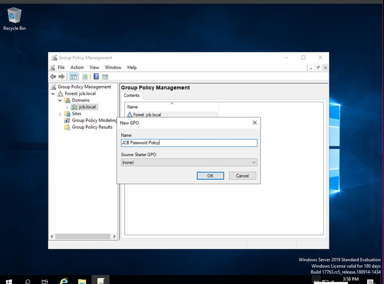

Project Summary: Installed and configured Windows Server 2019 on a virtual machine using Oracle VirtualBox. Promoted the server to a Domain Controller, created user accounts and groups using Active Directory, enforced security through Group Policy Objects (GPO), and configured static IP addressing.
Tools Used:
Oracle VirtualBox
Windows Server 2019
Active Directory Domain Services (AD DS)
Group Policy Management Console (GPMC)
Lab Walkthrough with Screenshots
Setting the built-in Administrator password during initial Windows Server setup.
Windows Server installation in progress — copying files and prepping for first boot.
Manually assigning a static IP address and DNS configuration for server communication.
Renaming the server to a meaningful hostname: JCB-MattDC, which will be used for domain setup.
Installation of Active Directory Domain Services and necessary administration tools completed successfully.
DNS configuration and delegation warnings after initiating domain controller promotion — typical in isolated lab setups.
Active Directory Users and Computers showing default OUs before user creation.
Created users Alice Miller and Bob Clark under the Accounting organizational unit.
Created and populated the Sales OU with Charlie Davis and Diana Evans.
Admins OU populated with Ian Jones and Julia King — future IT administrators.
Management OU with Kevin Lewis and Laura Martin — demonstrating group-based AD structure.

Creating a new Group Policy Object named "JCB Password Policy" using Group Policy Management.
Enforcing password complexity and expiration settings through GPO to enhance security.